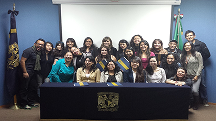
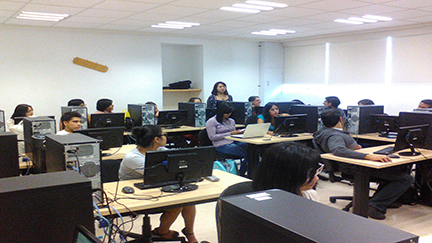
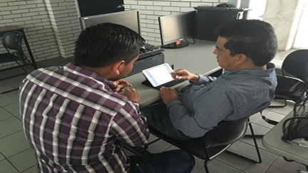
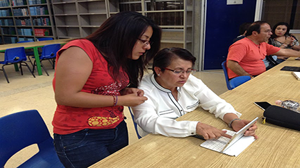
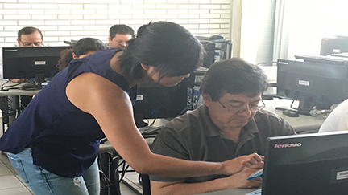
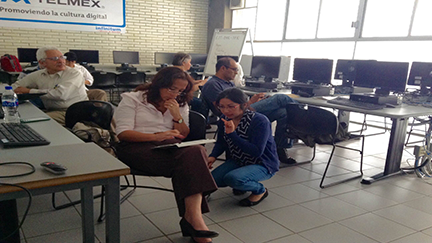

Plan de becas
Especialistas en TIC para la educación
- 
- 
- 
- 
- 
- 

Presentación
La línea “TIC para la Educación” del Programa de becas de formación en tecnologías de información y comunicación, está dirigido a estudiantes de licenciatura, para complementar y profundizar el conocimiento en las habilidades digitales, a través de tomar cursos especializados y participar en proyectos que integran las tecnologías en procesos de aprendizaje.
Objetivo
El plan de becarios de la Coordinación de Tecnologías para la Educación busca consolidar un grupo de jóvenes para ayudar a los profesores y alumnos de la comunidad UNAM a impulsar nuevas formas de educación a través del uso óptimo de las TIC. Los becarios obtendrán las habilidades digitales a través de participar en proyectos reales en las que incorporan novedosas formas de estructurar y dirigir actividades, crean materiales y realizan prácticas que estén encaminadas a consolidar y diversificar los procesos de enseñanza – aprendizaje.
Requisitos para participar
- Contar con el 50% de los créditos o más.
- Para los egresados, tener máximo seis meses de haber concluido la licenciatura y no estar titulados.
- Ser alumno regular (no tener materias reprobadas).
- Contar con un promedio mínimo de 8.0.
- Disponibilidad de horario de 2:00 a 6:00 pm ( 20 horas a la semana), de lunes a viernes.
- Conocimientos básicos de procesador de texto, hoja de cálculo, presentador, búsquedas y navegar por en Internet, y uso de una computadora.
- Podrán participar estudiantes de todas las licenciaturas de la UNAM y externas, que les interesen las tecnologías de información y comunicación aplicadas al aprendizaje y actividades académicas en bachillerato y universidad.
Documentos necesarios
- Última tira de materias sellada.
- Historial académico actualizado y sellado.
- Curriculum vitae con fotografía.
- Carta de exposición de motivos firmada.
- En el caso de egresados deben presentar la forma de titulación y selección del tema de tesis.
Etapas de la beca
Registro y Selección
Periodo: De mayo a junio del 2016
* Entrega de documentos y verificar que cumples con los requisitos académicos.
* Acudir a los cursos de la DGTIC.
* Selección de prebecarios a través de un proyecto realizado durante el primer curso.
Prebecario
Es el alumno que participa en la primera etapa del proceso de formación del programa, solamente percibiendo beca en especie, a través de su desempeño concursa para continuar un año en el plan de becas renovando la beca en especie o una beca económica.
* Son los primeros seis meses (de julio a diciembre de 2016), y consiste en participar en talleres y proyectos.
* Al concluir este semestre se realizará la selección final para ingresar al programa de becas, y se presentará la solicitud ante el Comité de becas de la DGTIC.
Primera y segunda etapa del becario
Es el alumno que por su eficiente desempeño el comité de becas de la DGTIC, le ha asignado una beca en especie o económica durante seis meses, que podrá renovar por otro semestre.
* Asignación de la beca económica o en especie.
* Duración de un año, renovación a través de una evaluación del Comité de becas de la DGTIC.
* Cada semestre se inicia con la formación a través de talleres y posteriormente se asignan a nuevos proyectos.
Seguimiento académico
* Para poder solicitar la beca económica o continuar con la beca en especie y obtener el diploma debes lograr en cada uno de los talleres que curses una calificación mínima de 8.5 y un 90% de asistencia o participación.
* La evaluación al desempeño en proyecto será de mínimo 8.0.
* Debes asistir a planteles de la UNAM para asesorar a los profesores, tres veces al mes.
Beneficios
- Durante tu estancia en el plan obtendrás 300 horas de formación en temas como plataformas educativas, herramientas colaborativas, manejo ético y seguro de la información, uso del equipo de cómputo y dispositivos, administración de proyectos, desarrollo de talleres con diseño instruccional y evaluación con rúbricas.
- Más de 700 horas de práctica en proyectos reales, desde la planeación y ejecución, que se convertirá en experiencia.
- Obtendrás la especialización en temas de vanguardia sobre educación y el uso de las TIC.
- Podrás lograr una beca en especie y/o económica mensual, al concluir satisfactoriamente los primeros seis meses y previa revisión del Comité de becas de la DGTIC.
- Al tener un excelente desempeño podrás realizar tu servicio social.
- Podrás tener asesoría para hacer tu tesis.
- Tendrás acceso a la biblioteca de la DGTIC y préstamos interbibliotecarios.
- Asistirás a eventos como congresos, seminarios, pláticas en la UNAM y otras instituciones.
- Al concluir la beca se te entregará un diploma o constancia por la capacitación y participación en proyectos educativos que involucran las TIC, que te permitirá avalar tu experiencia y lograr un mejor posicionamiento en el mercado laboral.
- Como los becarios de la Coordinación de Tecnologías para la Educación h@bitat puma son beneficiarios de una póliza de seguro que cubre distintos gastos médicos mayores.
Perfil del egresado
Asesorará en el uso adecuado de las diferentes herramientas tecnológicas para que los docentes dispongan de las aptitudes necesarias para innovar, crear y recrear diferentes estrategias y metodologías educativas.
Realizará diferentes reportes informativos sobre las metas alcanzadas y los obstáculos enfrentados, en los que refleje su capacidad de expresión escrita, planeación y organización.
Se integrará en equipos de trabajo multidisciplinarios para lograr metas a corto y mediano plazo.
Desarrollará una alta capacidad de comunicación y análisis enfocados a la solución a diversas situaciones entre la educación y las TIC.
Tendrá la capacidad de organizar las actividades asignadas mostrando iniciativa y actitud de servicio.
Proporcionará orientación y auxiliará en la configuración y administración de equipos y periféricos adecuados para las diferentes actividades educativas a realizar.
Difundirá e impulsará el uso legal y ético tanto de software, como de diferentes materiales de TIC para la educación.
Hecho en México, Universidad Nacional Autónoma de México (UNAM), todos los derechos reservados 2009 - 2016. Esta página puede ser reproducida con fines no lucrativos, siempre y cuando se cite la fuente completa y su dirección electrónica, y no se mutile. De otra forma requiere permiso previo por escrito de la institución.